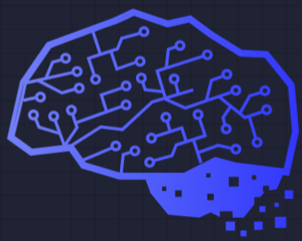
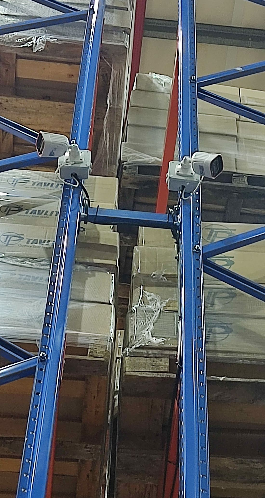
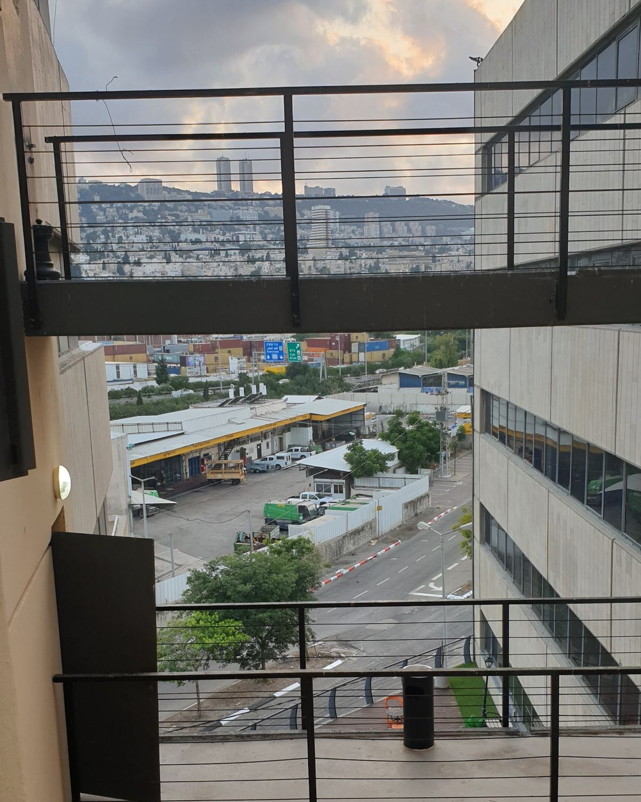

המחשבים של כל המשפחה, הראוטר, ה-Wi-Fi והמדפסת. ומי שרוצה, מקבל גם שיעור.The whole family’s computers, the router, the Wi-Fi and the printer. And a lesson, for whoever wants one.

שלוShalevכל מחשבEvery computer מקבל יחס אישיgets personal care
שלו – מתן שירותים למחשבים ולתקשורת. עמרי שלו, חיפה, מאז 2003.Shalev Computer & Network Services. Omri Shalev, Haifa, since 2003.
- מאזSince
- 2003
- כתובתAddress
- הרץ היינריך 2, חיפה2 Heinrich Hertz St, Haifa
- בגוגלOn Google
- 5.0 · 63 ביקורות63 reviews
עמרי שלו מטפל במחשבים, ברשתות ובמצלמות של עסקים ובתים פרטיים בחיפה: ייעוץ, תיקון, שדרוג, תחזוקה ושיעורים.Omri Shalev looks after the computers, networks and cameras of businesses and homes in Haifa: advice, repairs, upgrades, upkeep and lessons.
מה עמרי עושהWhat Omri does
מחשביםComputers
- תיקון חומרה ותוכנהHardware and software repair
- הרכבת מחשבים חדשיםNew computers built to order
- שדרוג ושיפור ביצועיםUpgrades and speed-ups
- התקנת מערכות הפעלה ותוכנותOperating systems and software
- גיבוי ושחזור מידעBackup and data recovery
רשתות ואבטחהNetworks and security
- רשתות קוויות ואלחוטיותWired and wireless networks
- אינטרנט, שיתוף מדפסות וקבציםInternet, shared printers and files
- מצלמות אבטחהSecurity cameras
- מערכות אזעקה אלחוטיותWireless alarm systems
- תמיכה טכנית, הדרכות וקורסיםTech support, training and courses
עמדות עבודה, רשת, מרכזייה, מצלמות ואזעקה: תכנון, התקנה ותחזוקה.Workstations, the network, the phone system, cameras and alarm: planning, installation and upkeep.
במשרד.At the office.
תיקון מחשבים נייחים וניידים, והרכבת מחשב חדש מחלקים.Desktop and laptop repairs, and new computers built from parts.
במעבדה.In the lab.
תמיכה מרחוק: עמרי מתחבר למחשב שלכם ועובד עליו מהמשרד שלו.Remote support: Omri connects to your computer and works on it from his office.
מרחוק.Remotely.

מצלמות על המדפים.Cameras on the racks.
עבודה של עמרי במחסן: שתי מצלמות על הקורות, והכבלים לאורכן.One of Omri’s jobs in a warehouse: two cameras on the beams, the cables run along them.
התמונה מתוך תמונות העסק בגוגלPhoto from the business’s Google listing
שני מספרים.Two numbers.
עמרי פתח את העסק בשנת 2003, ומאז הוא מטפל במחשבים של עסקים ומשפחות בחיפה. בגוגל יש לו דירוג 5.0 מ-63 ביקורות.Omri opened the business in 2003 and has looked after the computers of businesses and families in Haifa since. On Google he’s rated 5.0 from 63 reviews.
2003
5.0
עומרי שלו הינו בעל מקצוע אמין ומעולה.
הוא בעל ידע עצום בכל הקשור למחשבים ומערכות אלקטרוניות. הוא מאד יסודי ומדויק בעבודתו ויש לו יכולת הסברתית וסבלנות מירבית.
הייתי מאד מרוצה מהשרות שקיבלתי עבור המחשב שכלל גם תיקון תקלה שטכנאים אחרים לא הצליחו להתגבר עליה. כמו כן קבלתי מעומרי מספר שעורים שעזרו לי מאד בהבנת המחשב ופעולותיו.
המחירים בהחלט סבירים ופניותי הטלפוניות אליו נענות תוך זמן קצר. ממליצה מאוד בחום.
Omri Shalev is a reliable, excellent professional.
He has enormous knowledge of everything to do with computers and electronic systems. He is very thorough and precise in his work, explains things well and has endless patience.
I was very pleased with the service I received for my computer, which included fixing a fault other technicians hadn’t managed to beat. Omri also gave me several lessons that helped me a lot in understanding the computer and how it works.
The prices are certainly reasonable and my phone calls to him are answered quickly. Warmly recommended.
ניצה יוכלמןביקורת בגוגל · 5 כוכביםGoogle review · 5 stars · translated from Hebrew
עומרי מתחזק את מחשבי העסק וגם את המחשבים של כל המשפחה כבר מעל 15 שנים לשביעות רצוננו בשירות מעולה ובהפגנת מקצועיות בכל תחומי המחשבים.
Omri has maintained our business’s computers, and the whole family’s, for over 15 years, to our satisfaction, with excellent service and professionalism in every area of computing.
עמרי שלו – אדם אמין, מקצועי מאד מאד, ישר והגון, נותן שירות מכל הלב והנשמה… מנויה אצלו כבר עשרות שנים, ומעולם לא התאכזבתי ממנו.
Omri Shalev is trustworthy, very, very professional, honest and decent, and gives service with all his heart… I’ve been his subscriber for decades and he has never let me down.
מה מחובר אצלכם?What’s on your network?
סמנו מה צריך טיפול, ועמרי יקבל הודעה מסודרת בוואטסאפ.Tap what needs care, and Omri gets a tidy WhatsApp message.
הרשת שלכםYour network

הרץ היינריך 2, אופיר 252 Heinrich Hertz, Ofir 25
חיפהHaifa
א׳–ו׳ · 8:00–20:00Sun–Fri · 8:00–20:00
052-522-1010 omri@shalevcsp.com